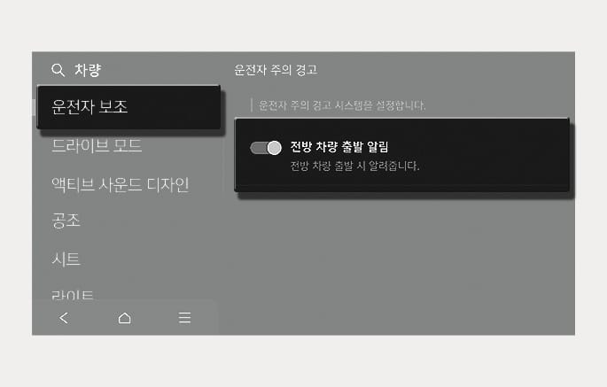

전방 차량 출발 알림 설정
전방 차량 출발 알림

2C_LeadingVehicleDepartureSettings
시동 'ON' 상태에서 인포테인먼트 시스템의 설정 → 차량 → 운전자 보조 → 운전자 주의 경고 를 차례로 선택하십시오.
-
전방 차량 출발 알림: 정차 중에 전방 차량이 출발했을 때 알려줍니다.
반드시 안전한 곳에 정차한 후 운전자 주의 경고를 설정하십시오.